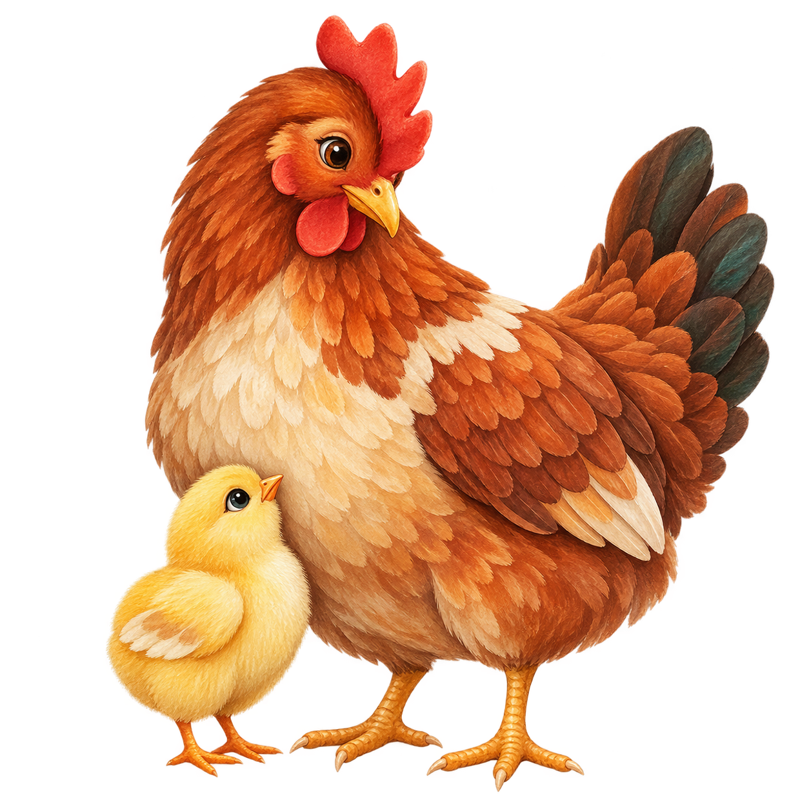

▣
Slika vsake živali
Lastno fotografijo izberi že med ustvarjanjem profila, pozneje pa jo zamenjaj ali odstrani.
Tvoja kmetija, živali, valjenja, opravila, družina in lokalna ponudba — pregledno na enem mestu.
↓ Prenesi APK za Android
Lastno fotografijo izberi že med ustvarjanjem profila, pozneje pa jo zamenjaj ali odstrani.
Izberi živino, prodajo ali oboje; aplikacija postavi prave funkcije v ospredje, izbiro pa lahko kadarkoli spremeniš.
Predstavi kmetijo, dodaj izdelke, količine, cene in načine prevzema ter spremljaj stanje vloge.
Opomnike veži na osem luninih faz, sončni vzhod ali zahod ter jih deli z družino.
SHA-256: f12cda50e29f3bf605c7b879032a304a64af85fa0129c5d7006a24cc25d7e3a3